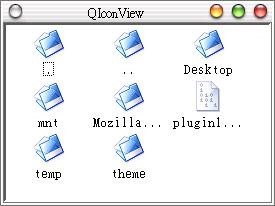

QIconView
類別提供可以顯示ICON與文字的區域，其中的ICON與文字是使用QIconViewItem類別來加入，您也可以隨時加入或刪除
QIconViewItem，刪除QIconViewItem只要直接使用delete將記憶體歸還就可以了，QIconViewItem的解構函式會自
動呼叫takeItem()告知QIconView父類別移除該QIconViewItem。
下面這個程式使用QIconView類別來列示目前目錄下的所有資料夾與檔案，並帶有ICON，按下資料夾的ICON可以瀏覽對應的目錄下的資料夾與檔案。
首先編輯iconview.h：
#ifndef ICON_VIEW
#define ICON_VIEW
#include <qiconview.h>
#include <qpixmap.h>
#include <qdir.h>
class QFileInfo;
class QDir;
class IconView : public QIconView {
Q_OBJECT
public:
IconView();
protected:
QPixmap folder, file;
QDir d; // 記錄目前路徑
void dirlist(); // 查詢目錄下的檔案
protected slots:
void itemSelected(QIconViewItem*);
};
#endif
再來編輯iconview.cpp：
#include "iconview.h"
#include <qfileinfo.h>
IconView::IconView()
: folder("folder.xpm"), file("file.xpm") {
setCaption("QIconView");
setSelectionMode(QIconView::Extended); // 選取的模式與顯示方式
setResizeMode(QIconView::Adjust); // 自動調整圖示分佈
setGridX(75); // 每個ICON的水平間隔為75pixel
setWordWrapIconText(false);
setShowToolTips(true);
setHScrollBarMode(QIconView::Auto); // 自動顯示捲軸
setVScrollBarMode(QIconView::Auto);
setSorting(true);
d.setPath("/home/");
d.setFilter(QDir::Files | QDir::Dirs | QDir::NoSymLinks);
d.setSorting(QDir::DirsFirst | QDir::Name);
dirlist();
connect(this, SIGNAL(doubleClicked(QIconViewItem*)),
this, SLOT(itemSelected(QIconViewItem*)));
}
void IconView::dirlist() {
const QFileInfoList *list = d.entryInfoList();
QFileInfoListIterator it(*list);
QFileInfo *fi;
while((fi = it.current()) != 0) {
if(fi->isDir())
new QIconViewItem(this, fi->fileName().latin1(), folder);
else
new QIconViewItem(this, fi->fileName().latin1(), file);
++it;
}
}
void IconView::itemSelected(QIconViewItem* item) {
QFileInfo fi(d.absPath() + "/" + item->text().latin1());
if(fi.isDir() && fi.fileName() != ".") {
d.setPath(fi.absFilePath());
QIconViewItem *i, *next;
// 移除所有的QIconViewItem
do {
i = firstItem();
next = i->nextItem();
delete i;
} while(next);
dirlist();
}
}
再來編輯main.cpp：
#include "iconview.h"
#include <qapplication.h>
int main(int argc, char **argv) {
QApplication app(argc, argv);
IconView *iv = new IconView();
app.setMainWidget(iv);
iv->show();
return app.exec();
}
其中關於SelectionMode與ResizeMode的選項請參考線上手冊；當按下資料夾ICON兩下時，會發出Signal -
doubleClicked()，它連接至Slot -
itemSelected()，作用為清除所有的QIconViewItem，並以Signal的QIconViewItem訊息為基礎，取
QIconViewItem的名稱來設定QDir的路徑，並呼叫dirlist()以重新查詢目錄。
下圖為程式執行時的一個畫面：

|
|